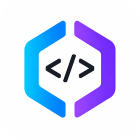

devspace init 设定允许打开的项目根目录、端口和 owner password。
通过你控制的 HTTPS tunnel 暴露 /mcp，再由 MCP 客户端连接。
连接后需要 Owner password，确保 ChatGPT 不能绕过你的本机授权。
在已批准的 workspace 中读写文件、跑命令、用 git worktree 并行工作。
在已打开的工作区里，ChatGPT 可以检查仓库结构、编辑文件和查看改动。
支持 shell 执行，用于测试、构建、搜索和 git 流程。
能为并行编码会话创建独立 worktree，减少互相污染。
会读取 AGENTS.md / CLAUDE.md，让项目约定自动进入工作流。
能够从技能目录发现本地 agent skills，把流程带进 ChatGPT。
在兼容宿主中展示工具卡与改动摘要，便于复核。
npm install -g @waishnav/devspace，然后 devspace init + devspace serve。
默认本地端点是 http://127.0.0.1:7676/mcp；实际使用通常通过你控制的 HTTPS tunnel 暴露。
| 项目 | 判断 | 说明 |
|---|---|---|
| 安全模型 | 明确 | 你决定允许哪些 root，权限边界是可见的，不是黑盒。 |
| 风险点 | 较高 | 一旦连接，MCP 客户端在已打开工作区内拥有很强本地能力，要把它视为可信 coding partner。 |
| 适用范围 | 局部、受控 | 最适合你希望 ChatGPT 直接操作本地项目但又不想把文件上传到第三方的场景。 |
| 不适用 | 纯云端协作 | 如果你不想管理 tunnel、owner password 和本机权限，这套方案会偏重。 |